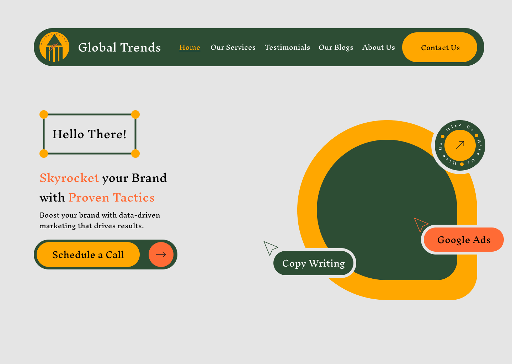
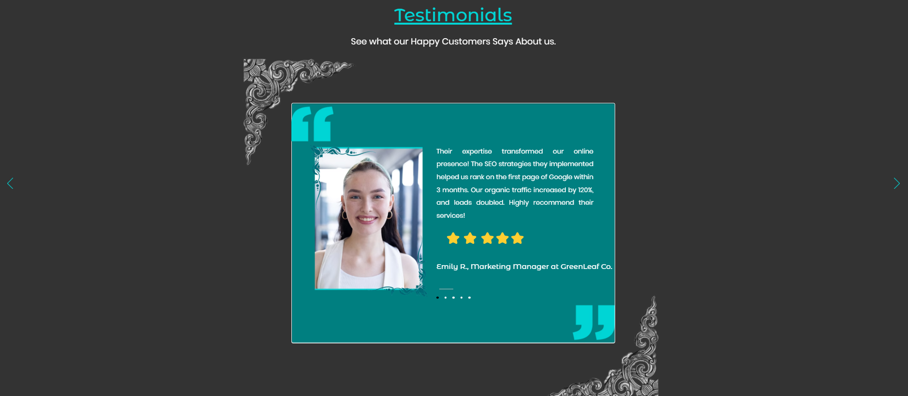
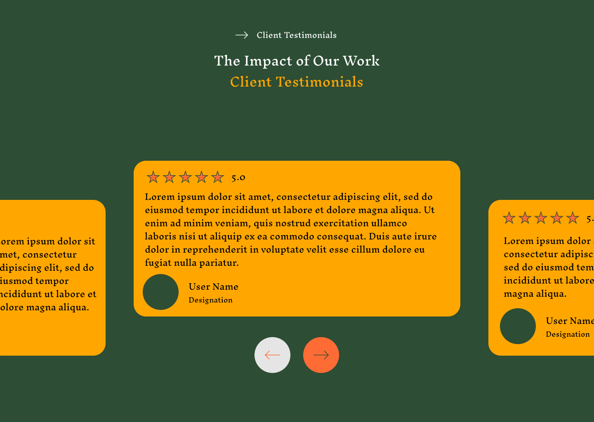
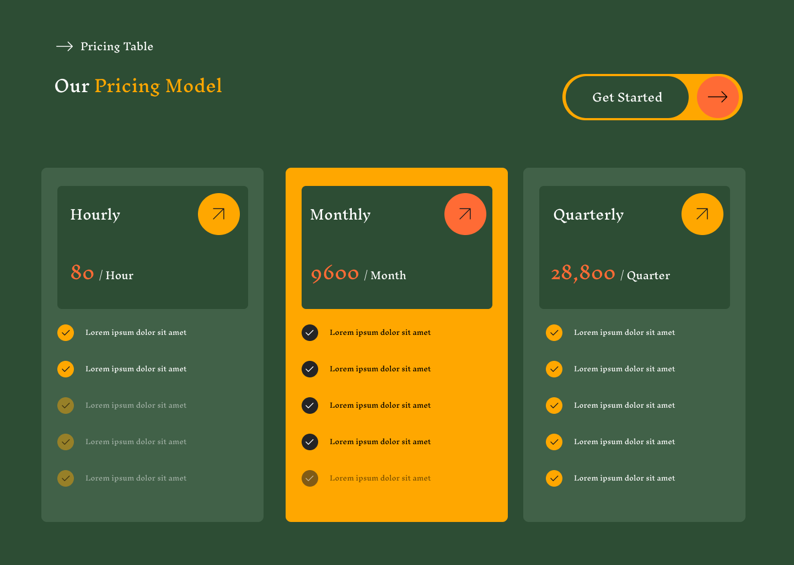

Original UI – Hero Section
The hero section was previously overloaded with text, minimal visual hierarchy, and a lack of emphasis on the CTA button.
Rethinking Modern Journalism for a Better Read
Tools Used: Figma, Canva
A redesign of the Global Trends website with the goal of enhancing readability, user experience, and visual hierarchy for better news consumption across age groups.
The Global Trends platform, while rich in content, was visually overwhelming for many users. The lack of proper spacing, contrast, and hierarchy made it difficult to consume information efficiently. The redesign focuses on refining the interface and experience for clarity and retention.
The hero section was previously overloaded with text, minimal visual hierarchy, and a lack of emphasis on the CTA button.

The redesign introduces bold headings, strategic whitespace, and a clear call-to-action to immediately capture user attention.

The testimonials felt disconnected with inconsistent styling and poor readability that didn't build user trust.

Now, testimonials are styled consistently, aligned visually, and presented in a clean card format that adds credibility.

The original pricing was unclear and poorly structured. The redesigned version improves readability, introduces visual hierarchy, and simplifies comparison.
The quick brown fox jumps over the lazy dog